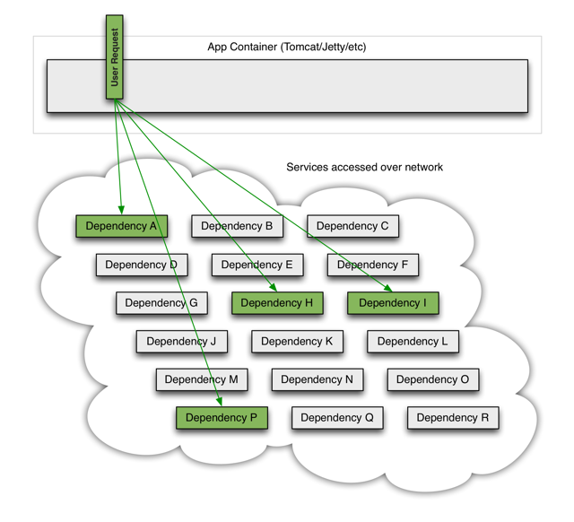

分布式进阶（二五）——分布式框架之高可用：Hystrix简介
在分布式理论篇中，我简单介绍过分布式系统保障接口级高可用的几种常见方式：限流、熔断、降级。目前，业界主要使用Hystrix来做这几项工作。
Hystrix是Netflix开源的一个Java框架，提供了保障接口级高可用相关的各种各样的功能，帮助我们控制分布式服务之间的交互。
本章，我将先简单介绍下Hystrix提供的核心功能，然后引入一个电子商务平台作为背景案例。后续章节，我对Hystrix核心功能和原理的讲解都会围绕该案例展开。
一、Hystrix初览
Hystrix官网对该框架能解决的核心问题已经做了概述，我这里再引用官方的几张图片来讲一讲：
首先，复杂分布式系统中的各个服务之间都是相互依赖的，每个依赖服务在某些时候都不可避免的会失败，正常情况下，应该是下面这样：

但是，当其中某个服务出现问题时，可能阻塞用户请求，如果请求没有与这些依赖故障隔离，那么它有可能被他们拖垮，如下图所示：

在高并发的情况下，一个后端依赖服务的故障，更可能导致服务器上的所有资源在数秒内饱和：

Hystrix的核心功能就是解决上述这种接口层级调用引起的资源耗尽和雪崩问题。
1.1 设计原则
我们再来看下Hystrix框架的一些设计原则：
1.阻止任何一个依赖服务耗尽所有的资源，比如tomcat中的所有线程资源
为每一个依赖服务维护一个独立的线程池，或者是semaphore，当线程池已满时，直接拒绝对这个服务的调用。
2.避免请求排队和积压，采用限流和fail fast来控制故障
对于超出阈值的服务调用，直接进行超时，不允许其阻塞过长时间，这个超时时间默认是99.5%的访问时间，也可以自己配置。
3.提供fallback降级机制来应对故障
如果对一个依赖服务的调用失败次数超过了一定的阈值，自动进行熔断，在一定时间内对该服务的调用直接降级，一段时间后再自动尝试恢复。
4.使用资源隔离技术，比如bulkhead（舱壁隔离技术）、swimlane（泳道技术）、circuit breaker（短路技术），来限制任何一个依赖服务的故障影响
通过HystrixCommand或者HystrixObservableCommand来封装对外部依赖的访问请求，这个访问请求一般会运行在独立的线程中，资源隔离。
5.通过近实时的统计/监控/报警功能，来提高故障发现的速度
统计对依赖服务的调用成功次数、失败次数、拒绝次数、超时次数。
6.通过近实时的属性和配置热修改功能，来提高故障处理和恢复的速度
对属性和配置的修改提供近实时的支持。
7.保护对依赖服务调用的所有故障情况，而不仅仅只是网络故障情况
当一个服务调用出现失败、被拒绝、超时、短路等异常情况时，自动调用fallback降级机制。
二、案例背景
从下一章开始，我将会以一个电子商务平台为示例，讲解Hystrix的各个技术要点。由于架构是不断演进的，直接上来一个最终的系统架构图估计大部分读者会晕，所以我先从讲解一个简单的商品详情页系统开始，逐步引出我们的最终系统架构图。
2.1 系统架构
对于电商系统的商品模块来说，如果我们需要展示商品的详情信息，那么一般都会对商品页进行静态化处理。页面静态化的好处是：预先从数据库中加载商品信息填充模板，这样每次用户浏览一个页面，不需要进行任何跟数据库的交互逻辑，直接返回一个html页面就可以了，性能非常高，如下图：
缺点也很明显，对于一些页面规模不大的电商网站来说，这种方案是可以的，但是对于大型电商平台，页面数量都是亿级的，每次html页面模板有变更，都有可能将几亿个页面重新静态化一次，显然是不靠谱的。
所以，对于大型电子商务平台来说，需要引入分布式缓存和消息中间件，实现动态渲染——即页面不是初始时就填充数据渲染好的，而是每次用户请求过来时动态渲染html页面，这样即使html页面模板变更也没什么影响。
动态渲染虽然耗费了渲染时间，但是由于Nginx本地有html页面缓存，再加上后台服务采用了Redis缓存和服务本身的JVM缓存来提供商品数据，所以商品数据查询的效率是很高的。这样，即使html页面的渲染耗费了时间，整体也是可以接受的。
上图中的核心其实就是整合服务：订阅一个MQ的消息变更，如果收到了变更通知，就调用相应的底层服务的数据接口，获取最新的数据，然后进行整合，最后填充到分布式Redis缓存中去。
上述架构，最容易出现问题的地方是哪里？
很显然，就是整合服务依赖的各种底层服务，在分布式系统中，不同的服务一般都由不同的团队维护，所以上述的商品服务、店铺服务、广告服务都是不稳定的，也就是我们必须认为它们是不可靠的。对于这种外部依赖的服务调用，一旦没有处理好的话，可能会导致整合服务自己本身会挂掉，严重情况下，甚至会导致说整个商品详情页系统的崩溃。
我们后续针对Hystrix的讲解，将会针对上述问题展开，先来看下技术栈的选择。
2.2 技术栈选择
由于本章的目的主要是介绍Hystrix，所以一切从简，dubbo、redis、kalfa什么的就不用了，直接模拟这些服务的调用导致系统不可用的场景，然后贯穿讲解Hystrix的全部技术点。
我们的技术栈选型如下：
- spring boot：用于构建服务
- http client：用于接口调用
- hystrix：用于接口级的高可用处理
另外，我们只搭建两个服务，然后模拟调用商品服务时可能出现的各种不可用场景：
- 整合服务
- 商品服务
2.3 系统实现
本章，我们先实现下整合服务和商品服务的核心接口。
整合服务
整合服务会订阅MQ，当消费到MQ中的商品ID和数据后，整合服务会根据商品ID，去调用商户服务的接口，获取所有商品数据。
我们直接通过Http Client往整合服务的changeProduct接口发送http请求，以此模拟MQ的消息推送：
@Controller
public class CacheController {
@RequestMapping("/change/product")
@ResponseBody
public String changeProduct(Long productId) {
// 拿到一个商品id，调用商品服务的接口，获取商品id对应的最新商品数据
// 用HttpClient去调用商品服务的http接口
String url = "http://127.0.0.1:8082/getProductInfo?productId=" + productId;
String response = HttpClientUtils.sendGetRequest(url);
System.out.println(response);
return "success";
}
}
商品服务
商品服务，提供根据商品ID查询商品信息的接口：
@Controller
public class ProductController {
@RequestMapping("/getProductInfo")
@ResponseBody
public String getProductInfo(Long productId) {
return "{\"id\": " + productId + ", \"name\": \"iphone7手机\", \"price\": 5599, \"pictureList\":\"a.jpg,b.jpg\", \"specification\": \"iphone7的规格\", \"service\": \"iphone7的售后服务\", \"color\": \"红色,白色,黑色\", \"size\": \"5.5\", \"shopId\": 1, \"modifiedTime\": \"2017-01-01 12:00:00\"}";
}
}
三、总结
本章，我对Hystrix的核心作用和设计原则进行了介绍。重点是引入了一个商品详情页系统作为后续讲解Hystrix的背景案例。从下一章开始，我们将模拟各种接口级的异常，讲解Hystrix的核心原理和技术要点。